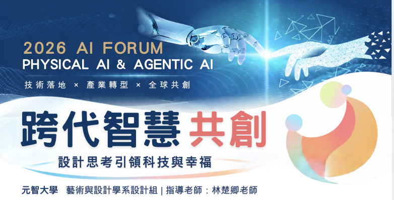
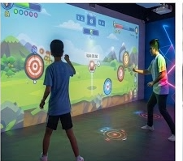
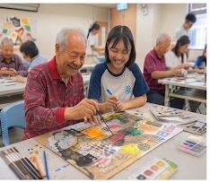
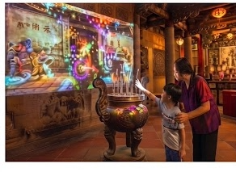

💡相關作品與互動單元
從沉浸式場景、互動遊戲到 AI 輔助創作，呈現學生將科技融入設計實作的多種嘗試。

從沉浸式場景、互動遊戲到 AI 輔助創作，呈現學生將科技融入設計實作的多種嘗試。
邀請長者與大學生共同體驗數位工具，在陪伴與交流中共同探索科技應用。



以人為本的設計思考，引導參與者理解生活情境、發現需求、共同發想並製作方案。從真實問題出發，讓 AI 與數位科技成為促進溝通、創意表達與幸福生活的助力。
探索參與者共同完成的創作成果，體驗 AI 輔助設計帶來的多元表達方式。
透過互動展示親身感受人與科技的連結，交流想法，為未來共創累積靈感。
跨代智慧共創｜設計思考引領科技與幸福
元智大學・藝術與設計學系｜指導老師：林楚卿老師
本活動由教育部高教深耕計畫補助